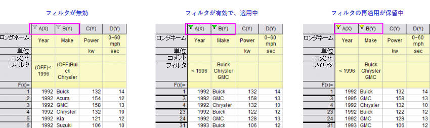

列リストビュー（表示：列リストビュー）に切り替え、リストビュー列にフィルタを適用すれば、データフィルタを列ラベル行に適用することもできます。詳細は、列リストビュー のデータフィルタ適用を参照してください。
Originは3つのデータ形式（日付/時間、数値、テキスト）でデータフィルタを用意しています。データフィルタはワークシートデータツールバーにあるボタンをクリックして、データフィルタのデータの追加、削除、有効化、無効化、再適用、カスタムフィルタを使用できます。
列リストビュー（表示：列リストビュー）に切り替え、リストビュー列にフィルタを適用すれば、データフィルタを列ラベル行に適用することもできます。詳細は、列リストビュー のデータフィルタ適用を参照してください。 |
列にフィルタを追加すると、列ヘッダのフィルタアイコンの色でフィルタの状態を確認できます。

1つもしくはいくつかの列にデータフィルタを追加、削除
データフィルタが追加されたときはデフォルトで空のフィルタになり、条件は何も設定されていません。いったんフィルタ条件が設定されれば、フィルタはフィルタ条件によって自動的に名前が付けられ、フィルタアイコンは緑色になります。
フィルタが適用された列でデータフィルタの追加/削除ボタンをクリックするとフィルタが削除されます。フィルタアイコンメニューからフィルタを削除しても同じです。
フィルタアイコンをなくさずに、適用したフィルタをオン/オフしたい場合は、次で説明するようにフィルタを無効にします。
データフィルタの追加後、次のどちらの方法でもフィルタの有効無効を切り替えることができます。
または、
2つ目の場合で複数の列が選択されていると、選択された列のうち左端にある列のデータフィルタのみ有効/無効が切り替わります。
データフィルタが無効化されているとき、フィルタアイコンは灰色になり、フィルタ名には「(オフ)」が表示されます。
フィルタが有効になっている列と無効になっている列が混ざっている範囲を選択した時にボタンをクリックすると、全ての列でフィルタが無効になります。
MS Excelと同様、フィルタが適用されたデータを変更した場合、フィルタを再度適用する必要があるので注意が必要です。 フィルタを再適用する必要がある場合、フィルタアイコンの色が黄色になります。フィルタを再適用するには、ワークシートデータ操作ツールバーのデータフィルタを再適用するボタンをクリックします。
Note: LabTalk変数をフィルタ条件に使用する場合があります。一般に、変数のフィルタ条件は、フィルタ実行後にキャッシュされます。したがって、LabTalkで変数の値を変更しても、データフィルタを再適用するボタンをクリックしても結果は変わりません。キャッシュに関係なくフィルタ条件のLabTalk変数を更新する場合は、LabTalkメソッドwks.runfilter()を使用してフィルタを再適用します。
|
デフォルトでは、データコネクタを使用してワークブックを保存すると、インポートされたデータは除外されます（ファイルと一緒に保存されません）。ワークブックにデータフィルタを追加した場合、ファイルを再度開くと、インポート後にデータフィルタが自動的に実行されます。インポート時にデータフィルタを自動実行したくない場合は、@WFI=0と設定します。LabTalkシステム変数の値を変更する方法については、このFAQを参照してください。 |
1つのワークシート列からデータフィルタをコピーして他の列に適用することができます。これには、実行前の条件スクリプトパネルで定義された変数を使用するカスタムフィルタが含まれます。
または
もしくは、数値列の場合には、
Originはデータタイプを決定し、自動的に3つのデータフィルタ（日付、数値、テキスト）から1つを対応する列に割り当てます。データフィルタを編集する場合にはフィルタ条件を設定する必要があります。
データフィルタを編集する場合、2つの方法があります。
または、
フィルタ条件を追加したら、 フィルタセルをダブルクリックしてフィルタを編集できます。 |
フォーマットごとに3つのフィルタタイプがあります。
書くフォーマットでメニューオプションが異なります。どのメニューオプションを表示するかは、列フォーマットプロパティで決定されます。
フォーマット = 日付の列の場合、以下のフィルタオプションがあります。
等しい、前、後をクリックすると、単純な日付フィルタダイアログが開きます。範囲をクリックすると、日付範囲を設定するダイアログが開きます。
数式タイプ、値、条件2あるいは、開始、終了を設定して、日付のフィルタを行います。
単純なデータフィルターの条件2には、および/あるいはフィルタがあります。デフォルトはなしですが、およびまたはあるいはを選択して、2番目のフィルタ条件を作成できます。
| なし | 2番目のフィルタ条件なし（デフォルト） |
|---|---|
| および | 抽出した条件に設定した日時がどちらも真であるデータを残して他の行を非表示にします。 |
| あるいは | 抽出した条件に設定した日時がどちらか片方が真であるデータを残して他の行を非表示にします。 |
データフィルタメニューのカスタムフィルタを選択すると開くカスタムデータフィルタダイアログで、より高度なフィルタリングを行えます。
以前は、値、開始および終了は、単純なテキストフィールドに置き換えられた標準の日付ピッカーコントロールを使用していました。日付ピッカーに戻すには、@DP = 1 とシステム変数を設定します。 |
フォーマット = 数値の列の場合、以下のフィルタオプションがあります。
等しい、より小さい、より大きいをクリックすると、単純な数値フィルタダイアログボックスが開きます。範囲をクリックすると、数値範囲を設定するダイアログが開きます。
数式タイプ、値、条件2あるいは、開始、終了を設定して、数値のフィルタを行います。
単純な数値フィルターの条件2には、および/あるいはフィルタがあります。デフォルトはなしですが、およびまたはあるいはを選択して、2番目のフィルタ条件を作成できます。
| なし | 2番目のフィルタ条件なし（デフォルト） |
|---|---|
| および | 抽出条件に設定した数値がどちらも真であるデータを残して他の行を非表示にします。 |
| あるいは | 抽出条件に設定した数値がどちらか片方が真であるデータを残して他の行を非表示にします。 |
上位10または下位10をクリックすると、トップテンダイアログが表示されます。ここでは、項目の数またはパーセントで最高値または最低値を除くすべての値を除外することができます。
データフィルタメニューのカスタムフィルタを選択すると開くカスタムデータフィルタダイアログで、より高度なフィルタリングを行えます。
テキストフィルタは選択した列のデータ形式がテキスト、月、曜日であるものに適用されます。
クイックメニューから、チェックボックスを選択/選択解除して、対応するテキストエントリを表示/非表示にすることができます。
カスタムフィルタをクイックメニューアイテムから選ぶとカスタムフィルタ（単純なテキスト）ダイアログが開きます。
テキストフィルタを使用した後、フィルタラベル行はフィルタで非表示になっていないテキストエントリのリストを表示します。デフォルトで、セル内のエントリはスペース (" ")で区切られています。システム変数 @TFSでは0=Enter、1=スペース、2=カンマ、 3=セミコロンとなり、区切り文字を切り替えることができます。 もう一つのシステム変数 @TFL は、テキストフィルタラベル行の文字の最大数を設定できます。デフォルトでは、50に設定されています。最初の文字列と最後の文字列は常に完全に表示され（ソートはアルファベット順です）、他の文字列は...で表示されます。 これら2つのLabTalkシステム変数については、LabTalkシステム変数リストを参照してください。 |
縦棒/横棒グラフのX列にテキストが含まれるとき、テキストは主目盛ラベルとして使用され、行番号順に並べられます。Origin 2018より前は、ワークシートデータフィルタを適用したときに、データポイントがプロットされていないにも関わらず、空の目盛とフィルタリングされたデータのラベルが登録されていました。これはOrigin 2018で変更され、フィルタデータに紐づいた目盛は表示されません。カテゴリーとして設定されていないテキストを含むX列に対してのみ適用されます。 バージョン2018より前の状態に戻すには、 |
詳細チェックを選択するとカスタムフィルタ（テキスト形式の詳細）ダイアログが開きます。
キーボードからの直接入力とメニュー選択の任意の組み合わせを使用して、条件を作成できます。ダイアログボックスには、いくつかの重要な要素（ワイルドカード文字、行番号）が表示され、条件式の例が表示されます。
| サンプル | 説明 |
| NOT(make="Buick" OR make="Chrysler") | "Buick" と "Chrysler"を除外 |
| !(make="Buick" OR make="Chrysler") | "Buick" と "Chrysler"を除外 |
| !(make="Buick" || make="Chrysler") | "Buick" と "Chrysler"を除外 |
| シンボル | 使用方法 |
| ?(クエスチョンマーク) | 任意の1文字を表します。例えば、”a?c”は”abc”や”adc”を検索しますが、”abbc”は検索されません。 |
| *(アスタリスク) | 任意の文字列を表します。例えば、”abc*e”は”abcde”や”abcdde”、”abce”を検索します。 |
| ==(イコール2つ) | 完全一致を表します。例えば、x=="a*"は"a*"を検索しますが、"abc"は検索しません。 |
テキストフィルタでワイルドカードを使う方法については次の簡単なチュートリアルをご覧ください。 |
カスタムデータフィルタダイアログは日付と数値データの高度なフィルタリングを実行するために使用します。
| テスト | フィルタ条件を満たす行は、元のワークシートで強調表示されます。これらの行は、フィルタリング後も残ります。 |
|---|---|
| OK | フィルタ条件の変更を適用し、ダイアログを閉じます。 |
| キャンセル | フィルタ条件の変更を適用せずにダイアログを閉じます。 |
| OK | ダイアログを閉じずにフィルタ条件を適用します。 |
数値フィルタでは一部の組み込み関数がフライアウトメニュー内に表示されません。それらの関数は以下の通りです。
| 数式 | 使用方法 |
| x.between(x1,x2) | ユーザ入力値のx1とx2の間のxのサブ範囲を返します。下記と同じです。 x<=x2 && x>=x1. *表の下の注釈を確認してください。 |
| x.top(10,0) | xの上位10を返します。 |
| x.top(10,1) | xの上位10%を返します。 |
| x.bottom(10,0) | xの下位10を返します。 |
| x.bottom(10,1) | xの下位10%を返します。 |
| x.top(n,0/1) | Xの中で上位n を返します。0が選択されていると、n は項目の個数、1が選択されているとn はパーセントです。 |
| x.bottom(n,0/1) | Xの中で下位n を返します。0が選択されていると、n は項目の個数、1が選択されているとn はパーセントです。 |
* この式では、x1 と x2 は行番号です。この式で変数を使用する場合は、"x1"と "x2"は広く使用されているシステム変数であるため、値が変更される可能性があるので使用しないでください。代わりにページ変数v1...v4の使用を検討します。
テキスト、数値、日付のフィルタのために、Originは、x.count() 関数をサポートし、複製されたデータの数をカウントできます。例えば、3以上の数であるテキストデータを保持するには、カスタムデータフィルタダイアログで以下のようにセットします。 |
フィルタメニューから以下の操作が可能です。
ロードされたフィルタはこのメニューの下部に表示されます（ない場合は「なし」と表示）。
デフォルトでは、フィルタで非表示になった行はグラフ操作では無視されます。以下のいずれかの方法でこれを変更し、非表示行を含めることが可能です。
wks.ignorehidden = 0;
または、
| Note: 非表示行は、LTスクリプトおよび値の設定では無視されません。 |
マスクを適用してデータフィルタを列データに適用する場合、マスクしたデータでもデフォルトで列に表示されます。 データフィルタを使用して列にマスクされたデータを表示するかどうかは、システム変数@FBMによって制御されています。
|
列をコピーやピボットテーブルの、再計算の鍵のアイコンには、3つのワークシートフィルタオプションがあります。これらは結果がさらなるフィルタの変化によって影響を受けるかどうかを制御するために使用されます。
Note：列のコピーおよびピボットテーブルの再計算モードは自動または手動に設定する必要があります。
| ワークシートフィルタ：ロック |
このオプションが選択されているとき、ソース列のデータフィルタ条件が変更されても、結果は固定されます。つまり、ソースワークシートのフィルタ条件が変更されても、結果列の更新のトリガーにはなりません。 |
|---|---|
| ワークシートフィルタ：再読み込み |
この項目はワークシートフィルタ：ロックをあらかじめ選択しないとアクティブになりません。ソース列から結果列にデータフィルタ条件を再読み込みします。 つまり、ソース列のデータフィルタ条件を変更した後、このオプションをクリックしてロックされた結果列の自動更新を行うことで、結果列にも同じフィルタ条件が適用されます。 |
| ワークシートフィルタ：戻る |
この項目はワークシートフィルタ：ロックをあらかじめ選択しないとアクティブになりません。初期データフィルタ条件をソース列に戻します。 つまり、ソースワークシートのデータフィルタ条件を変更後、このオプションをクリックするとソース列から適用された最新のデータフィルタ条件は、結果列に適用されているフィルタ条件に押し戻されます。結果列に直接データフィルタを適用した場合には、ソースに反映させることはできませんのでご注意ください。 |
テキストと現在のフィルタ条件を組み合わせたテキストラベルをグラフに追加できます。例えば、テキスト "Make ="を文字列 "%(1, @LF)"と組み合わせて、フィルタ条件の変化に応じて変化するダイナミックラベルを作成します（ラベルを更新すると、フィルタはロックできません）。 |